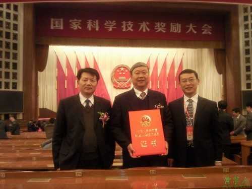
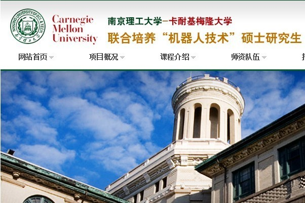
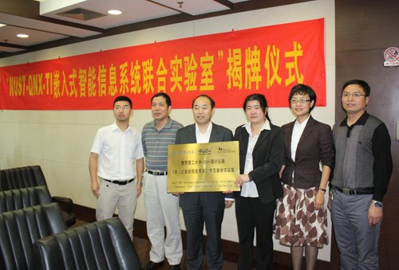
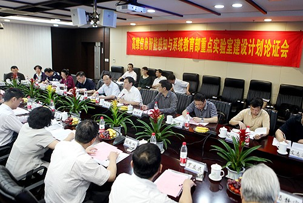
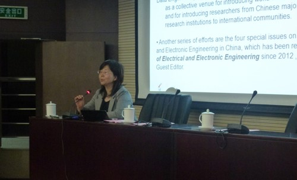
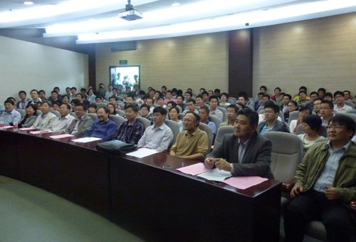

计算机学院大事记（1953年-2013年）
中国人民解放军军事工程学院炮兵工程系时期
★1953年，中国人民解放军军事工程学院成立，下设5个工程系：空军工程系(一系)、炮兵工程系(二系)、海军工程系(三系)、装甲兵工程系(四系)、工程兵工程系(五系)；一个预科总队。共设24个本科专业，73个专业课教授会（即教研室）以及实验室、陈列室、专修室等。学院前身——炮兵仪器教研室模拟计算机研究组（206教授会）隶属于二系。
★1958年3月始，在开展勤工俭学和技术革新的运动中，模拟计算机研究组（206教授会）师生自己动手试制和修复了许多教学仪器、器材，并制作了一部分支持工农业建设的产品。在教学器材方面还试制成功了磁控制实验台、模拟探测器、乙丙射线指示器、百位进位电子计数器等较贵重的电子仪器。
★1958年7月29日，模拟计算机研究组（206教授会）经过四个月的努力，终于试制成功一架电子模拟计算机。同年8月１日，该成果在北京参加军队院校技术革命成果展览会。获得周恩来、刘少奇、陈云、林彪、陈毅等中央领导同志的好评。10月，该成果参加国庆献礼展览。
中国人民解放军炮兵工程学院时期
★1960年7月1日，炮兵工程学院正式建院，炮兵仪器教研室模拟计算机研究组发展成为计算机指挥自动化教研室。
★1961年6月9日，建立指挥仪电子计算机科。
★1962年，根据中共中央“调整、巩固、充实、提高”的方针和中央军委批准的《国防科委关于军事工程学院的任务、规模、专业调整和精简整编问题的报告》，把64个专业精简整编为45个，指挥仪电子计算机科被撤销。
★1962年，哈军工一期学员屈大壮提出创建计算机教研室并开展数字计算机研制计划，获批准。
★1964年，高射炮兵指挥仪立项获批，科研经费100多万。
★1965年底，“炮工—I”型电子管数字计算机诞生并投入使用，计算机字长32位，内存1K，速度为5000次/秒，当时堪称一个创举。
华东工程学院时期
★1966年4月，学校接受国防科委下达的1045-Ⅰ型数字指挥仪的科研任务。此项任务由指挥仪专业承担，计算机教研室主任屈大壮负责。
★1969年，学校成立1045-Ⅰ型数字指挥仪科研“五七”分队，与苏州无线电工业局开展合作。科研分队队长先后为王德臣、冯缵刚。
★1971年1月8日，1045-Ⅰ型57mm高炮数字指挥仪样机研制成功。8月，完成1045-Ⅰ型、1045-Ⅱ型数字指挥仪科研任务。该项目的科研工作为1972年恢复数字计算机专业奠定了基础。
★1971年11月1日，第五机械工业部批准学校设置计算机专业。
★1972年，学校设立数字计算机专业，并恢复招生。
★1978年，新增计算机软件专业。
★1978年，以孙吉振、杨静宇为参研主力的“弹道参数测量计算机”项目获“第一届全国科学大会奖”。
★1979年11月20日，电子计算机专业和机房由四系分出来，建立华东工学院计算机科学与工程系（六系），分两个专业，计算机硬件专业和计算机软件专业。
★1980年4月4日，学校专业作下列调整：一系火炮随动专业、四系指挥仪专业与计算机系合并，成立计算机与自动控制系，设硬件、软件和自控三个专业。
★1980年10月31日，在学院中心实验室，MCS-052/10微型计算机鉴定通过，该计算机完全符合原设计的技术指标要求，接口灵活，适应性强，工作稳定可靠，适宜工业控制和数据的采集和处理。
★1981年，“MCS-052微型计算机系统”获五机部技术改进成果一等奖。
★1984年9月18日，在我国首次举办的大型国际田径比赛——南京国际田径赛中，使用了学院研制的微型计算机，获得一致好评。
华东工学院时期
★1985年3月，经党委研究决定，将604、605、607、610(一部分)教研室由六系分出，建立十系，六系命名为计算机科学与工程系。
★1986年7月28日，新增“计算机应用”硕士点。
★1987年5月7日，由学院承担的“动态图象序列分析方法研究”课题通过了国家机械委主持的鉴定。专家组认为，该项研究不但具有重要的理论研究价值，而且在高技术如智能机器人（计算机视觉）及军事科学如弹道学等方面都有重大应用价值，在国内居首创地位。
★1987年，新增“网络通信”本科专业。
★1990年10月12日至21日，杨静宇教授等人发明的“印鉴真伪自动识别装置”获第五届全国发明展览会银牌奖。
★1990年10月，新增“模式识别与智能系统”硕士点。
★1990年11月16日至20日，杨静宇、胡庆、张黔等人发明的“印鉴真伪自动鉴别装置”获“第二届国际专利及新技术新产品展览会”金奖。
★1992年9月4日，信息自动化与制造工程学院成立。该分院是由机械制造系、计算机科学与工程系、自动控制系组成。
南京理工大学时期
★1994年3月29日，“模式识别与智能控制”博士点获批。
★1995年3月，撤销信息自动化与制造工程学院及党总支，撤销机械制造系、计算机科学与工程系、自动控制系等处级机构，成立信息学院，并组建党总支。
★1995年，“模式识别与智能系统”博士后流动站获批。
★1996年，“计算机应用技术”二级学科博士点获批。
★1996年4月9日，由杨静宇教授为总师，北京理工大学、浙江大学、清华大学、国防科技大学、哈尔滨工业大学等六所高校共同承担的“地面军用智能机器人”通过鉴定。
★1997年8月29日，信息学院计算机科学与工程系更名为计算机系。
★1997年，“模式识别与智能系统”进入“211工程”重点学科建设。
★1997年，经国务院学位办批准，“计算机技术”为工程硕士学位授权专业。
★2000年，按教育部本科专业名称调整，计算机应用、计算机软件专业统一作为“计算机科学与技术”专业招生。
★2000年12月，“计算机软件及理论”二级学科硕士点获批。
★2000年12月，“生物医学工程”硕士点获批。
★2001年，“计算机应用技术”被评为省级重点学科。
★2001年，“模式识别与智能系统”被评为国家重点学科。
★2002年，经国务院学位办批准，软件工程专业为工程硕士学位授权专业。
★2002年8月10日，杨静宇教授带领的课题组研制的国内首辆路面智能检测车通过鉴定，该成果为国内公路建设与养护提供了智能化的高技术检测设备，是一项重要的创新性科技成果，其主要技术性能已达到国际先进水平。
★2002年，“模式识别与智能系统”进入“211工程”二期重点学科建设。
★2003年，软件工程本科专业招生。
★2003年9月，“计算机科学与技术”硕士点获批。
★2003年，“计算机体系结构”硕士点获批。
★2003年，“计算机科学与技术”博士后流动站获批。
★2003年，“计算机科学与技术”评为省特色专业。
★2004年3月6日，新增“网络工程”本科专业，通信工程停止招生。
★2005年12月19日，南京理工大学计算机科学与技术学院成立。
★2007年，“计算机科学与技术实验教学中心”获批江苏省高校实验教学示范中心。
★2007年8月20日，“模式识别与智能系统”列为教育部国家重点学科。
★2008年，“计算机科学与技术”被评为省品牌专业。
★2009年4月，杨静宇教授与唐振民教授课题组研制的车辆主动安全技术正式通过省教育厅主持的鉴定。该技术主要利用车内、车外两个普通的摄像头，和嵌入式计算系统来帮助驾驶员实现危险预警的。系统通过摄像头获取的行车道和前方车辆图像数据，进行汽车偏道与碰撞危险数据分析，从而判定汽车是不是处于安全驾驶状态，并对非正常驾驶发出报警。
★2009年11月4日，由中国自动化学会及模式识别国家重点实验室主办、学院承办的2009年全国模式识别学术会议暨中日韩模式识别学术研讨会在学校召开。这是大会自2007年举办以来，首次在北京以外的城市召开。
★2010年1月11日，杨静宇教授主持的“特征抽取理论与算法研究”理论研究成果被评为国家自然科学二等奖，实现了学校在自然科学技术奖上零的突破。

★2011年8月，杨健教授获国家杰出青年科学基金。
★2011年，新增“计算机科学与技术”一级学科博士点。
★2011年，新增“软件工程”一级学科博士点。
★2011年，与卡耐基梅隆大学机器人研究所联合培养双硕士学位项目获教育部批准。

★2011年，“南理工-QNX-TI嵌入式智能信息系统联合实验室”成立。该实验室是“QNX及TI联合中国高校计划”项目在中国建设的首批高水平实验室之一。

★2012年1月，“高维信息智能感知与系统”教育部重点实验室获批成立。

★2012年，与江苏省公安厅共建江苏省“社会公共安全”实验室成立。
★2012年3月，由中国科教评价网和中国科学评价研究中心共同发布了2011年中国研究生教育排行榜，其中包括按81个一级学科和373个专业等8个方面的508个排行榜。学院“模式识别与智能系统”专业位列全国第一，“计算机科学与技术”专业位列全国第39位。
★2012年5月，更名为南京理工大学计算机科学与工程学院。
★2012年5月3日，“2012 ISCIDE模式识别与智能科学高层论坛”在学校开幕。来自香港中文大学、北京大学、浙江大学、上海交通大学、西安电子科技大学、国防科技大学等信息科学与智能科学领域的专家出席了论坛。2012 ISCIDE是国际金三角信息科学与智能科学学术论坛的重点内容。本次论坛主题主要包括计算机视觉和图像处理、机器学习和计算智能、协同视觉机制、脑结构与脑功能的模式识别等问题。
 
★2012年7月30日，“计算机科学与技术”、“软件工程”、“网络工程”被确定为省级重点专业。
★2012年，“高维信息智能感知与系统创新引智基地”获教育部2013年“111”计划立项。
★2012年8月17日，江苏省“社会公共安全图像与视频理解实验室”通过建设方案论证。
★2012年12月19日，“社会公共安全信息工程”被工信部评为新兴交叉学科。